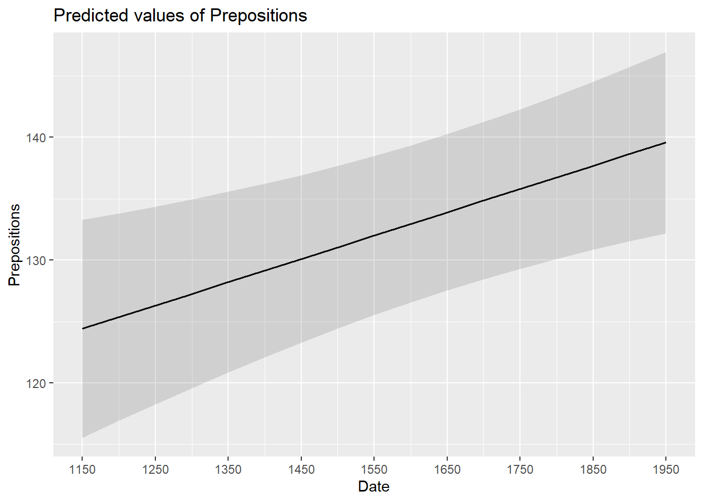

Week 11 Mixed-Effects Regression
This week, we will learn about mixed-effects regressions. So far, we have only learned about fixed-effects regression models but there are also mixed-effects regressions (which are fitted using the lme4 package (Bates et al. 2015) in this tutorial).
Fixed-effects regression models are models that assume a non-hierarchical data structure, i.e. data where data points are not nested or grouped in higher order categories (e.g. students within classes). The first part of this tutorial focuses on fixed-effects regression models while the second part focuses on mixed-effects regression models.
In contrast, mixed-effects models assume a hierarchical data structure in which data points are grouped or nested in higher order categories (e.g. students within classes or items within subjects). Mixed-effects models are rapidly increasing in use in data analysis because they allow us to incorporate hierarchical or nested data structures. Mixed-effects models are, of course, an extension of fixed-effects regression models and also multivariate and come in different types (e.g., linear, logistic, ordinal, multinomial).
Mixed-effects models have the following advantages over simpler statistical tests:
Mixed-effects models are multivariate, i.e. they test the effect of several predictors simultaneously while controlling for the effect of all other predictors.
Mixed models allow to statistically incorporate within-speaker variability and are thus fit to model hierarchical or nested data structures. This applies if several observations are produced by an individual speaker, for instance.
Mixed-models provide a wealth of diagnostic statistics which enables us to control e.g. (multi-)collinearity, i.e. correlations between predictors, and to test whether conditions or requirements are violated (e.g. homogeneity of variance, etc.).
Major disadvantages of mixed-effects regression modeling are that they are prone to producing high \(\beta\)-errors (see Johnson 2009) and that they require rather large data sets.
The following focuses on an extension of ordinary multiple linear regressions: a mixed-effects linear regression.
Preparation and session set up
For this week’s content, we need to install certain packages from an R library so that the scripts shown below are executed without errors. hence, before turning to the code below, please install the packages by running the code below this paragraph - it may take some time (between 1 and 5 minutes to install all of the libraries so you do not need to worry if it takes some time).
# install
install.packages("Boruta")
install.packages("car")
install.packages("emmeans")
install.packages("effects")
install.packages("flextable")
install.packages("ggplot2")
install.packages("ggpubr")
install.packages("Hmisc")
install.packages("knitr")
install.packages("lme4")
install.packages("MASS")
install.packages("mclogit")
install.packages("MuMIn")
install.packages("nlme")
install.packages("ordinal")
install.packages("rms")
install.packages("robustbase")
install.packages("sjPlot")
install.packages("stringr")
install.packages("tibble")
install.packages("dplyr")
install.packages("vcd")
install.packages("vip")
# install klippy for copy-to-clipboard button in code chunks
install.packages("remotes")
remotes::install_github("rlesur/klippy")Now that we have installed the packages, we activate them as shown below.
# set options
options(stringsAsFactors = F) # no automatic data transformation
options("scipen" = 100, "digits" = 12) # suppress math annotation
# load packages
library(Boruta)
library(car)
library(effects)
library(emmeans)
library(flextable)
library(ggfortify)
library(ggplot2)
library(ggpubr)
library(Hmisc)
library(knitr)
library(lme4)
library(MASS)
library(mclogit)
library(MuMIn)
library(nlme)
library(ordinal)
library(rms)
library(robustbase)
library(sjPlot)
library(stringr)
library(tibble)
library(vcd)
library(vip)
# activate klippy for copy-to-clipboard button
klippy::klippy()11.1 Introduction
It is very common that the data is nested in the sense that data points are not independent because they are, for instance, produced by the same speaker or are grouped by some other characteristic. In such cases, the data is considered hierarchical and statistical models should incorporate such structural features of the data they work upon. Fortunately, modeling hierarchical or nested data structures is very easy thanks to the lme4 package (Bates et al. 2015).
With respect to regression modeling, hierarchical structures are incorporated by what is called random effects. When models only have a fixed-effects structure, then they make use of only a single intercept and/or slope (as in the left panel in the figure below), while mixed effects models have intercepts for each level of a random effect. If the random effect structure represents speakers then this would mean that a mixed-model would have a separate intercept and/or slope for each speaker (in addition to the overall intercept that is shown as an orange line in the figure below).

The idea behind regression analysis is expressed formally in the equation below where\(f_{(x)}\) is the y-value we want to predict, \(\alpha\) is the intercept (the point where the regression line crosses the y-axis at x = 0), \(\beta\) is the coefficient (the slope of the regression line), and x is the value of a predictor (e.g. 180cm - if we would like to predict the weight of a person based on their height). The \(\epsilon\) is an error term that reflects the difference between the predicted value and the (actually) observed value (\(\epsilon\) is thus a residual that is important as regressions assume that residuals are, e.g., normally distributed).
\[\begin{equation} f_{(x)} = \alpha + \beta x + \epsilon \end{equation}\]
In other words, to estimate how much someone weights who is 180 cm tall, we would multiply the coefficient (slope of the line) with 180 (\(x\)) and add the value of the intercept (point where line crosses the y-axis at x = 0).
The equation below represents a formal representation of a mixed-effects regression with varying intercepts (see Winter 2019, 235).
\[\begin{equation} f_{(x)} = \alpha_{i} + \beta x + \epsilon \end{equation}\]
In this random intercept model, each level of a random variable has a different intercept. To predict the value of a data point, we would thus take the appropriate intercept value (the model intercept + the intercept of the random effect) and add the product of the predictor coefficient and the value of x.
Finally, the equation below represents a formal representation of a mixed-effects regression with varying intercepts and varying slopes (see Winter 2019, 235).
\[\begin{equation} f_{(x)} = \alpha_{i} + \beta_{i}x + \epsilon \end{equation}\]
In this last model, each level of a random variable has a different intercept and a different slope. To predict the value of a data point, we would thus take the appropriate intercept value (the model intercept + the intercept of the random effect) and add the coefficient of that random effect level multiplied by the value of x.
11.2 Random Effects
Random Effects can be visualized using two parameters: the intercept (the point where the regression line crosses the y-axis at x = 0) and the slope (the acclivity of the regression line). In contrast to fixed-effects models, that have only 1 intercept and one slope (left panel in the figure above), mixed-effects models can therefore have various random intercepts (center panel) or various random slopes, or both, various random intercepts and various random slopes (right panel).
What features do distinguish random and fixed effects?
Random effects represent a higher level variable under which data points are grouped. This implies that random effects must be categorical (or nominal but they a´cannot be continuous!) (see Winter 2019, 236).
Random effects represent a sample of an infinite number of possible levels. For instance, speakers, trials, items, subjects, or words represent a potentially infinite pool of elements from which many different samples can be drawn. Thus, random effects represent a random sample sample. Fixed effects, on the other hand, typically do not represent a random sample but a fixed set of variable levels (e.g. Age groups, or parts-of-speech).
Random effects typically represent many different levels while fixed effects typically have only a few. Zuur, Hilbe, and Ieno (2013) propose that a variable may be used as a fixed effect if it has less than 5 levels while it should be treated as a random effect if it has more than 10 levels. Variables with 5 to 10 levels can be used as both. However, this is a rule of thumb and ignores the theoretical reasons (random sample and nestedness) for considering something as a random effect and it also is at odds with the way that repeated measures are models (namely as mixed effects) although they typically only have very few levels.
Fixed effects represent an effect that if we draw many samples, the effect would be consistent across samples (Winter 2019) while random effects should vary for each new sample that is drawn.
In the following, we will only focus on models with random intercepts because this is the more common method and because including both random intercepts and random slopes requires larger data sets (but have a better fit because intercepts are not forced to be parallel and the lines therefore have a better fit). You should, however, always think about what random effects structure is appropriate for your model - a very recommendable explanation of how to chose which random effects structure is best (and about what the determining factors for this decision are) is give in Winter (2019, 241–44). Also, consider the center and the right plots above to understand what is meant by random intercepts and random slopes.
After adding random intercepts, predictors (or fixed effects) are added to the model (just like with multiple regression). So mixed-effects are called mixed-effects because they contain both random and fixed effects.
In terms of general procedure, random effects are added first, and only after we have ascertained that including random effects is warranted, we test whether including fixed-effects is warranted (Field, Miles, and Field 2012).
11.3 Example: Preposition Use across Time by Genre
To explore how to implement a mixed-effects model in R we revisit the preposition data that contains relative frequencies of prepositions in English texts written between 1150 and 1913. As a first step, and to prepare our analysis, we load necessary R packages, specify options, and load as well as provide an overview of the data.
# load data
lmmdata <- base::readRDS(url("https://slcladal.github.io/data/lmd.rda", "rb")) %>%
# convert date into a numeric variable
dplyr::mutate(Date = as.numeric(Date))Date | Genre | Text | Prepositions | Region |
1,736 | Science | albin | 166.01 | North |
1,711 | Education | anon | 139.86 | North |
1,808 | PrivateLetter | austen | 130.78 | North |
1,878 | Education | bain | 151.29 | North |
1,743 | Education | barclay | 145.72 | North |
1,908 | Education | benson | 120.77 | North |
1,906 | Diary | benson | 119.17 | North |
1,897 | Philosophy | boethja | 132.96 | North |
1,785 | Philosophy | boethri | 130.49 | North |
1,776 | Diary | boswell | 135.94 | North |
1,905 | Travel | bradley | 154.20 | North |
1,711 | Education | brightland | 149.14 | North |
1,762 | Sermon | burton | 159.71 | North |
1,726 | Sermon | butler | 157.49 | North |
1,835 | PrivateLetter | carlyle | 124.16 | North |
The data set contains the date when the text was written (Date), the genre of the text (Genre), the name of the text (Text), the relative frequency of prepositions in the text (Prepositions), and the region in which the text was written (Region). We now plot the data to get a first impression of its structure.
p1 <- ggplot(lmmdata, aes(x = Date, y = Prepositions)) +
geom_point() +
geom_smooth(method = "lm", se = F, color = "red", linetype = "dashed") +
theme_bw() +
labs(y = "Frequency\n(Prepositions)")
p2 <- ggplot(lmmdata, aes(x = reorder(Genre, -Prepositions), y = Prepositions)) +
geom_boxplot() +
theme_bw() +
theme(axis.text.x = element_text(angle=90)) +
labs(x = "Genre", y = "Frequency\n(Prepositions)")
p3 <- ggplot(lmmdata, aes(Prepositions)) +
geom_histogram() +
theme_bw() +
labs(y = "Count", x = "Frequency (Prepositions)")
grid.arrange(grobs = list(p1, p2, p3), widths = c(1, 1), layout_matrix = rbind(c(1, 1), c(2, 3)))
The scatter plot in the upper panel indicates that the use of prepositions has moderately increased over time while the boxplots in the lower left panel show that the genres differ quite substantially with respect to their median frequencies of prepositions per text. Finally, the histogram in the lower right panel show that preposition use is distributed normally with a mean of 132.2 prepositions per text.
p4 <- ggplot(lmmdata, aes(Date, Prepositions)) +
geom_point() +
labs(x = "Year", y = "Prepositions per 1,000 words") +
geom_smooth(method = "lm") +
theme_bw()
p5 <- ggplot(lmmdata, aes(Region, Prepositions)) +
geom_boxplot() +
labs(x = "Region", y = "Prepositions per 1,000 words") +
geom_smooth(method = "lm") +
theme_bw()
grid.arrange(p4, p5, nrow = 1)
ggplot(lmmdata, aes(Date, Prepositions)) +
geom_point() +
facet_wrap(~ Genre, nrow = 4) +
geom_smooth(method = "lm") +
theme_bw() +
labs(x = "Date of composition", y = "Prepositions per 1,000 words") +
coord_cartesian(ylim = c(0, 220))
Centering or even scaling numeric variables is useful for later interpretation of regression models: if the date variable were not centered, the regression would show the effects of variables at year 0(!). If numeric variables are centered, other variables are variables are considered relative not to 0 but to the mean of that variable (in this case the mean of years in our data). Centering simply means that the mean of the numeric variable is subtracted from each value.
lmmdata$DateUnscaled <- lmmdata$Date
lmmdata$Date <- scale(lmmdata$Date, scale = F)Date | Genre | Text | Prepositions | Region | DateUnscaled |
109.8696461825 | Science | albin | 166.01 | North | 1,736 |
84.8696461825 | Education | anon | 139.86 | North | 1,711 |
181.8696461825 | PrivateLetter | austen | 130.78 | North | 1,808 |
251.8696461825 | Education | bain | 151.29 | North | 1,878 |
116.8696461825 | Education | barclay | 145.72 | North | 1,743 |
281.8696461825 | Education | benson | 120.77 | North | 1,908 |
279.8696461825 | Diary | benson | 119.17 | North | 1,906 |
270.8696461825 | Philosophy | boethja | 132.96 | North | 1,897 |
158.8696461825 | Philosophy | boethri | 130.49 | North | 1,785 |
149.8696461825 | Diary | boswell | 135.94 | North | 1,776 |
278.8696461825 | Travel | bradley | 154.20 | North | 1,905 |
84.8696461825 | Education | brightland | 149.14 | North | 1,711 |
135.8696461825 | Sermon | burton | 159.71 | North | 1,762 |
99.8696461825 | Sermon | butler | 157.49 | North | 1,726 |
208.8696461825 | PrivateLetter | carlyle | 124.16 | North | 1,835 |
We now set up a fixed-effects model with the glm function and a mixed-effects model using the glmer function from the lme4 package (Bates et al. 2015) with Genre as a random effect.
# generate models
m0.glm <- glm(Prepositions ~ 1, family = gaussian, data = lmmdata)
m0.lmer = lmer(Prepositions ~ 1 + (1|Genre), REML = T, data = lmmdata)Now that we have created the base-line models, we will test whether including a random effect structure is mathematically justified. It is important to note here that we are not going to test if including a random effect structure is theoretically motivated but simply if it causes a decrease in variance.
11.4 Testing Random Effects
As a first step in the modeling process, we now need to determine whether or not including a random effect structure is justified. We do so by comparing the AIC of the base-line model without random intercepts to the AIC of the model with random intercepts.
AIC(logLik(m0.glm))## [1] 4718.19031114AIC(logLik(m0.lmer))## [1] 4497.77554693The inclusion of a random effect structure with random intercepts is justified as the AIC of the model with random intercepts is substantially lower than the AIC of the model without random intercepts.
While I do not how how to test if including a random effect is justified, there are often situations, which require to test exactly which random effect structure is best. When doing this, it is important to use restricted
maximum likelihood (REML = TRUE or method = REML) rather than maximum likelihood (see Pinheiro and Bates 2000; Winter 2019, 226).
# generate models with 2 different random effect structures
ma.lmer = lmer(Prepositions ~ Date + (1|Genre), REML = T, data = lmmdata)
mb.lmer = lmer(Prepositions ~ Date + (1 + Date | Genre), REML = T, data = lmmdata)
# compare models
anova(ma.lmer, mb.lmer, test = "Chisq", refit = F)## Data: lmmdata
## Models:
## ma.lmer: Prepositions ~ Date + (1 | Genre)
## mb.lmer: Prepositions ~ Date + (1 + Date | Genre)
## npar AIC BIC logLik deviance Chisq Df
## ma.lmer 4 4499.148092 4516.292084 -2245.574046 4491.148092
## mb.lmer 6 4486.699509 4512.415498 -2237.349755 4474.699509 16.44858 2
## Pr(>Chisq)
## ma.lmer
## mb.lmer 0.00026806 ***
## ---
## Signif. codes: 0 '***' 0.001 '**' 0.01 '*' 0.05 '.' 0.1 ' ' 1The model comparison shows that the model with the more complex random effect structure has a significantly better fit to the data compared with the model with the simpler random effect structure. However, we will continue with the model with the simpler structure because this is just an example and we want to keep it simple here.
NOTE
In a real analysis, we would switch to a model with random intercepts and random slopes for Genre because it has a significantly better fit to the data.
11.5 Model Fitting
After having determined that including a random effect structure is justified, we can continue by fitting the model and including diagnostics as we go. Including diagnostics in the model fitting process can save time and prevent relying on models which only turn out to be unstable if we would perform the diagnostics after the fact.
We begin fitting our model by adding Date as a fixed effect and compare this model to our mixed-effects base-line model to see if Date improved the model fit by explaining variance and if Date significantly correlates with our dependent variable (this means that the difference between the models is the effect (size) of Date!)
m1.lmer <- lmer(Prepositions ~ (1|Genre) + Date, REML = T, data = lmmdata)
anova(m1.lmer, m0.lmer, test = "Chi")## refitting model(s) with ML (instead of REML)## Data: lmmdata
## Models:
## m0.lmer: Prepositions ~ 1 + (1 | Genre)
## m1.lmer: Prepositions ~ (1 | Genre) + Date
## npar AIC BIC logLik deviance Chisq Df
## m0.lmer 3 4501.947337 4514.805331 -2247.973668 4495.947337
## m1.lmer 4 4495.017736 4512.161728 -2243.508868 4487.017736 8.9296 1
## Pr(>Chisq)
## m0.lmer
## m1.lmer 0.0028059 **
## ---
## Signif. codes: 0 '***' 0.001 '**' 0.01 '*' 0.05 '.' 0.1 ' ' 1## refitting model(s) with ML (instead of REML)The model with Date is the better model (significant p-value and lower AIC). The significant p-value shows that Date correlates significantly with Prepositions (\(\chi\)2(1): 8.929600937903, p = 0.00281) . The \(\chi\)2 value here is labeled Chisq and the degrees of freedom are calculated by subtracting the smaller number of DFs from the larger number of DFs.
We now test whether Region should also be part of the final minimal adequate model. The easiest way to add predictors is by using the update function (it saves time and typing).
# generate model
m2.lmer <- update(m1.lmer, .~.+ Region)
# test vifs
car::vif(m2.lmer)## Date Region
## 1.20287667936 1.20287667936# compare models
anova(m2.lmer, m1.lmer, test = "Chi")## refitting model(s) with ML (instead of REML)## Data: lmmdata
## Models:
## m1.lmer: Prepositions ~ (1 | Genre) + Date
## m2.lmer: Prepositions ~ (1 | Genre) + Date + Region
## npar AIC BIC logLik deviance Chisq Df
## m1.lmer 4 4495.017736 4512.161728 -2243.508868 4487.017736
## m2.lmer 5 4494.624343 4516.054333 -2242.312171 4484.624343 2.39339 1
## Pr(>Chisq)
## m1.lmer
## m2.lmer 0.12185Three things tell us that Region should not be included:
the AIC does not decrease,
the BIC increases(!), and
the p-value is higher than .05.
This means, that we will continue fitting the model without having Region included. Well… not quite - just as a note on including variables: while Region is not significant as a main effect, it must still be included in a model if it were part of a significant interaction. To test if this is indeed the case, we fit another model with the interaction between Date and Region as predictor.
# generate model
m3.lmer <- update(m1.lmer, .~.+ Region*Date)
# extract vifs
car::vif(m3.lmer)## Date Region Date:Region
## 1.96923042276 1.20324697637 1.78000887978# compare models
anova(m3.lmer, m1.lmer, test = "Chi")## refitting model(s) with ML (instead of REML)## Data: lmmdata
## Models:
## m1.lmer: Prepositions ~ (1 | Genre) + Date
## m3.lmer: Prepositions ~ (1 | Genre) + Date + Region + Date:Region
## npar AIC BIC logLik deviance Chisq Df
## m1.lmer 4 4495.017736 4512.161728 -2243.508868 4487.017736
## m3.lmer 6 4496.124872 4521.840861 -2242.062436 4484.124872 2.89286 2
## Pr(>Chisq)
## m1.lmer
## m3.lmer 0.23541Again, the high p-value and the increase in AIC and BIC show that we have found our minimal adequate model with only contains Date as a main effect. In a next step, we can inspect the final minimal adequate model, i.e. the most parsimonious (the model that explains a maximum of variance with a minimum of predictors).
# inspect results
summary(m1.lmer)## Linear mixed model fit by REML ['lmerMod']
## Formula: Prepositions ~ (1 | Genre) + Date
## Data: lmmdata
##
## REML criterion at convergence: 4491.1
##
## Scaled residuals:
## Min 1Q Median 3Q Max
## -3.734915441 -0.657038004 0.005865025 0.661298615 3.596659863
##
## Random effects:
## Groups Name Variance Std.Dev.
## Genre (Intercept) 159.021120 12.6103576
## Residual 228.764179 15.1249522
## Number of obs: 537, groups: Genre, 16
##
## Fixed effects:
## Estimate Std. Error t value
## (Intercept) 133.88516211469 3.24749296248 41.22724
## Date 0.01894493515 0.00632363682 2.99589
##
## Correlation of Fixed Effects:
## (Intr)
## Date 0.00511.6 Effect Sizes
We will now extract effect sizes (in the example: the effect size of Date) and calculate normalized effect size measures (this effect size measure works for all fixed effects). When you have factorial design, you can take the square root of the squared t-value divided by the t-value squared plus the degrees of freedom to calculate the effect size:
\[\begin{equation} r = \sqrt{ \frac{ t^2}{(t^2 + df) } } = \sqrt{ \frac{ 3.99^2}{(3.99^2 + 520) } } = 0.172 \end{equation}\]
NOTE
Two words of warning though:
br>1. In our case, the effect we are interested in is not factorial but continuous which means that we should not use this effect size measure. We only show this here as an example for how you can calculate the effect size measure r.
2. Only apply this function to main effects that are not involved in interactions as they are meaningless because the amount of variance explained by main effects involved in interactions is unclear (Field, Miles, and Field 2012, 641).
sjPlot::tab_model(m1.lmer)| Prepositions | |||
|---|---|---|---|
| Predictors | Estimates | CI | p |
| (Intercept) | 133.89 | 127.51 – 140.26 | <0.001 |
| Date | 0.02 | 0.01 – 0.03 | 0.003 |
| Random Effects | |||
| σ2 | 228.76 | ||
| τ00 Genre | 159.02 | ||
| ICC | 0.41 | ||
| N Genre | 16 | ||
| Observations | 537 | ||
| Marginal R2 / Conditional R2 | 0.012 / 0.417 | ||
NOTE
The R2 values of the summary table are incorrect (as indicated by the missing conditional R2 value). The more appropriate conditional and marginal coefficient of determination for generalized mixed-effect models can be extracted using the r.squaredGLMM function from the MuMIn package (Barton 2020).
The marginal R2 (marginal coefficient of determination) represents the variance explained by the fixed effects while the conditional R2 is interpreted as a variance explained by the entire model, including both fixed and random effects (Bartoń 2020).
The respective call for the model is:
# extract R2s
r.squaredGLMM(m1.lmer)## R2m R2c
## [1,] 0.0121971160211 0.417270545308The effects can be visualized using the plot_model function from the sjPlot package (Lüdecke 2021).
sjPlot::plot_model(m1.lmer, type = "pred", terms = c("Date")) +
# show uncentered date rather than centered date
scale_x_continuous(name = "Date",
breaks = seq(-500, 300, 100),
labels = seq(1150, 1950, 100))
While we have already shown that the effect of Date is significant, it is small which means that the number of prepositions per text does not correlate very strongly with time. This suggests that other factors that are not included in the model also impact the frequency of prepositions (and probably more meaningfully, too).
11.7 Model Diagnostics
We now create diagnostic plots. What we wish to see in the diagnostic plots is a cloud of dots in the middle of the window without any structure. What we do not want to see is a funnel-shaped cloud because this indicates an increase of the errors/residuals with an increase of the predictor(s) (because this would indicate heteroscedasticity) (Pinheiro and Bates 2000, 182).
# start plotting
par(mfrow = c(2, 2)) # display plots in 2 rows and 2 columns
plot(m1.lmer, pch = 20, col = "black", lty = "dotted"); par(mfrow = c(1, 1))
What a wonderful unstructured cloud - the lack of structure tells us that the model is “healthy” and does not suffer from heteroscedasticity.
# observed responses versus the within-group fitted values
plot(m1.lmer, Prepositions ~ fitted(.), id = 0.05, adj = -0.3,
xlim = c(80, 220), cex = .8, pch = 20, col = "blue")Although some data points are named, the plot does not show any structure, like a funnel, which would have been problematic.
11.8 Reporting Results
Before we do the write-up, we have a look at the model summary as this will provide us with at least some of the parameters that we want to report.
sjPlot::tab_model(m1.lmer)| Prepositions | |||
|---|---|---|---|
| Predictors | Estimates | CI | p |
| (Intercept) | 133.89 | 127.51 – 140.26 | <0.001 |
| Date | 0.02 | 0.01 – 0.03 | 0.003 |
| Random Effects | |||
| σ2 | 228.76 | ||
| τ00 Genre | 159.02 | ||
| ICC | 0.41 | ||
| N Genre | 16 | ||
| Observations | 537 | ||
| Marginal R2 / Conditional R2 | 0.012 / 0.417 | ||
NOTE
The R2 values of the summary table are incorrect (as indicated by the missing conditional R2 value). The more appropriate conditional and marginal coefficient of determination for generalized mixed-effect models can be extracted using the r.squaredGLMM function from the MuMIn package (Barton 2020).
The respective call for the model is:
r.squaredGLMM(m1.lmer)## R2m R2c
## [1,] 0.0121971160211 0.417270545308We can use the reports package (Makowski et al. 2021) to summarize the analysis.
report::report(m1.lmer)## We fitted a linear mixed model (estimated using REML and nloptwrap optimizer) to predict Prepositions with Date (formula: Prepositions ~ Date). The model included Genre as random effect (formula: ~1 | Genre). The model's total explanatory power is substantial (conditional R2 = 0.42) and the part related to the fixed effects alone (marginal R2) is of 0.01. The model's intercept, corresponding to Date = 0, is at 133.89 (95% CI [127.51, 140.26], t(533) = 41.23, p < .001). Within this model:
##
## - The effect of Date is statistically significant and positive (beta = 0.02, 95% CI [6.52e-03, 0.03], t(533) = 3.00, p = 0.003; Std. beta = 0.11, 95% CI [0.04, 0.19])
##
## Standardized parameters were obtained by fitting the model on a standardized version of the dataset. 95% Confidence Intervals (CIs) and p-values were computed usingWe can use this output to write up a final report:
A mixed-effect linear regression model which contained the genre of texts as random effect was fit to the data in a step-wise-step up procedure. Due to the presence of outliers in the data, weights were included into the model which led to a significantly improved model fit compared to an un-weight model (\(\chi\)2(2): 39.17, p: 0.0006). The final minimal adequate model performed significantly better than an intercept-only base-line model (\(\chi\)2(1): 12.44, p =.0004) and showed that the frequency of prepositions increases significantly but only marginally with the date of composition (Estimate: 0.02, CI: 0.01-0.03, p < .001, marginal R2 = 0.0174, conditional R2 = 0.4324). Neither the region where the text was composed nor a higher order interaction between genre and region significantly correlated with the use of prepositions in the data.